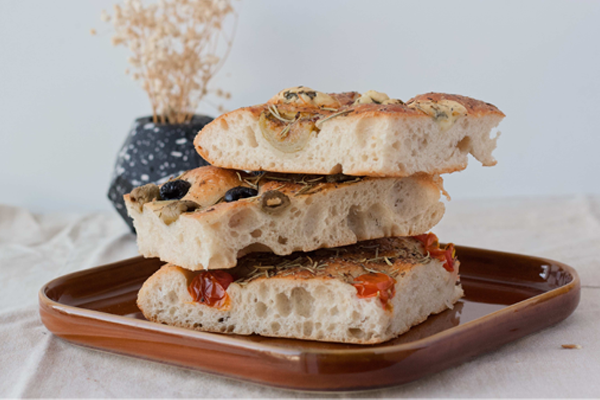
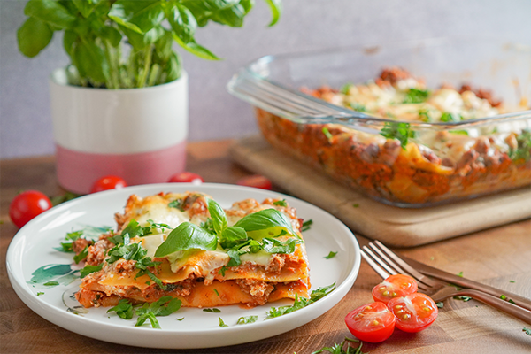
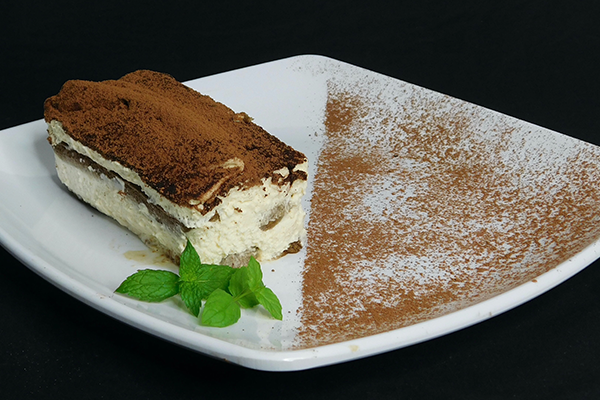

Here are some of the classic Italian recepies that everyone should know. These dishes belongs in every kitchen.
FOCACCIA

By Helene Grimstad
Difficulty: Easy
#focaccia #italian #EasyRecipe
Foccacia is a relatively flat bread that we usually associate with the Italian cuisine. The delicious bread is quick and easy to make.
Ingredients
- Flour 1kg
- Yeast 50g
- Water, lukewarm 9dl
- Olive oil 2tbs
- Salt 1tbs
- Rosemary
Instructions
- Mix the ingredients together to a dough, and let sit until double in size.
- Evenly lay the dough out on a abaking tray, and let sit for 20 minutes. Put the oven to 200'C
- Pour over some Extra Virgin Olive Oil, and press your fingers into the dough. Add maldon salt and finely cut rosemary.
- Put the baking tray in the oven for 25 minutes and enjoy with your favourite salad!
LASAGNE

By Helene Grimstad
Difficulty: Moderate, but the longer you cook the meat sauce, the better the lasagna.
#lasagne #italian #delicious
This Italian dish is loved by everyone. This is based on the classic Italian recipes and adapted to find the best result.
It is important to make a good meat sauce and a good cheese sauce to make a Lasagna.
Ingredients
- Minced meat 1kg
- Carrots 4pcs
- Yellow onion 1pcs
- Garlic gloves 6
- Tomato pure 1can
- Chopped tomatoes 2cans
- Bull broth 2dl
- Red wine vinegar 1tbsp
- Sugar 2tsp
- Oil for frying
- Salt and pepper
Instructions
- Cut up onions, carrots, celery sticks and garlic and place in the pan.
Cook until soft. Add tomato puree and sugar.
Fry a little before adding chopped tomatoes and beef broth.
- Fry the minced meat little by little in a hot pan.
When you have finished the minced meat, pour over together with the tomato sauce and let the sauce simmer for a minimum of 1 hour.
- Now it's time to put the lasagna together.
Start with a little cheese sauce at the bottom and place pasta plates over this.
Add a thin layer of meat sauce, a new layer of cheese sauce and then pasta plates.
- Finish by sprinkling a little more grated cheese and fresh mozzarella.
Finish with a few good drops of olive oil and a little salt and pepper.
Put the pan in a preheated oven at 200 degrees hot air. Let it cook for 25 minutes.
Serve with a fresh salad, a little extra parmesan and garlic baguettes.
TIRAMISU

By Helene Grimstad
Difficulty: Easy
#tiramisu #italian #dessert
Tiramisu is one of the cornerstones of Italian cuisine, one of the best-loved and most frequently made desserts in the entire world.
Ingredients
- Mascarpone cheese, 750g
- Eggs, 5
- Ladyfingers, 250g
- Sugar, 120g
- Coffee, 300g
Instructions
- Separate the eggs, being careful to keep the whites totally free of yolk. Beat the yolks with a hand mixer, adding half of the sugar, add the mascarpone a little at a time.
- Set the cream aside. Clean the mixer well and move on to whipping the egg whites. Once they're foamy, pour in the remaining sugar a little at a time.
- Take a spoonful of the whites and add it to the bowl with the mascarpone cream, then stir vigorously with a spatula to dilute the mixture. Next, add the rest of the egg whites little by little, folding them in by mixing very gently from the bottom upwards.
- Spread a heaping spoonful on the bottom of a glass baking dish. Dip the ladyfingers into the cold coffee for under a second. Then arrange the coffee-soaked ladyfingers in the dish.
- Add another layer of mascarpone cream and level it so the cookies are covered completely. Continue in layers.
- Sprinkle over sliced chocolate, and leave the tiramisu to set in the fridge for a couple of hours. Your tiramisu is ready to be enjoyed!